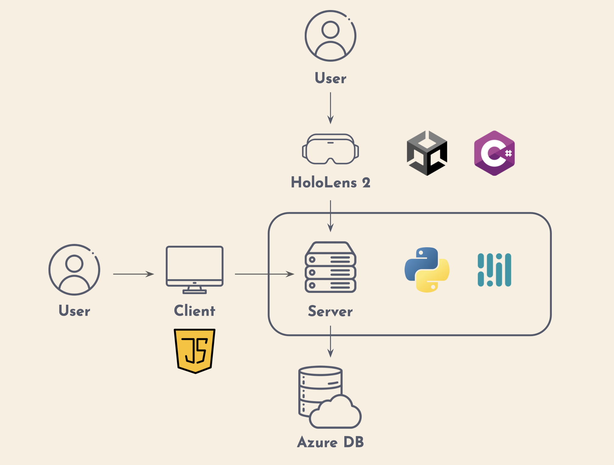
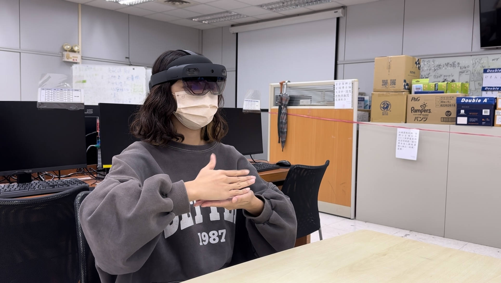
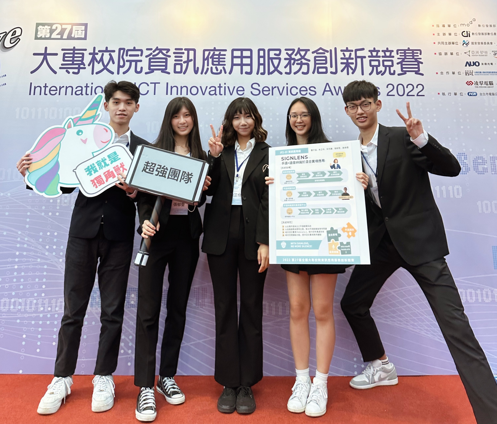

SignLens
Sign Language and Speech Recognition System Using HoloLens 2
Duration: July 2021 - Dec. 2022
Role: Team Leader
Skills: Project Management, SQL & Database Management, Machine Learning, Teamwork, Innovation
Description
In Taiwan, approximately 10.5% of the disabled people are people with hearing impairments, with 44% of those facing difficulties in daily communication due to severity of their conditions.
Communication is an essential part of human interactions; however, for individuals with hearing impairments, communication barriers may be elevated due to the limited popularity of sign language and the shortage of sign language interpreters.
Objective / Success Metrics
Our objective was to create a sign language translation system to enhance communication efficiency between the hearing-impaired and the general public.
In addition to soliciting user feedback, we established success metrics as follows:
- Training accuracy: 90%
- Testing accuracy: 80%

- System Structure -
Approach
-
User Insight Gathering:
Through interviews with hearing-impaired individuals and sign language interpreters, we identified challenges with current communication methods:
- Lack of emotional nuance in text-based communication.
- Inconvenience of web-based sign language translation tools.
- Absence of sign language interpretation in critical contexts like banks and hospitals.
-
Technology Research:
After comprehensive evaluation of machine learning methodologies, we opted for the Recurrent Neural Network (RNN), to be more specific, the Gated Recurrent Unit (GRU) model — a suitable choice for processing sequential data and real-time applications.
-
Model Development and MR Integration:
We successfully trained the GRU-based model and seamlessly integrated it into Microsoft's HoloLens 2 mixed reality headset. This innovation empowered users to view sign language interpretation subtitles and facial expressions simultaneously, even while on the move, enhancing the interactivity, mobility and convenience of the system.

- A Hearing-Impaired User Signing while Wearing HoloLens 2 -
Results
Our project yielded a sign language translator capable of converting sign language video clips and audio into subtitles. Both the training and testing datasets exceeded the predefined accuracy benchmarks. While real-world testing accuracy could be influenced by network speed, it still achieved an accuracy of 80%.
- Training accuracy: 95%
- Testing accuracy: 86%
- Real-world testing accuracy: 80%
Furthermore, the development of this system has received recognition from both industry and academia, notably clinching first place in the International ICT Innovative Services Awards 2022 and the departmental IS project competition. These achievements underscored the innovation and scalability of our system.

- Winning First Place in the International ICT Innovative Services Awards 2022 -